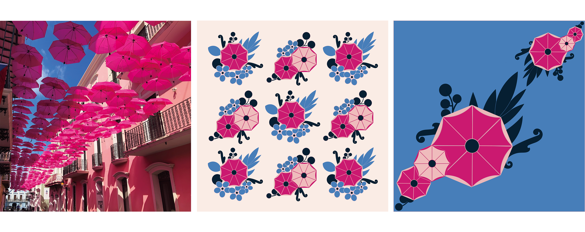
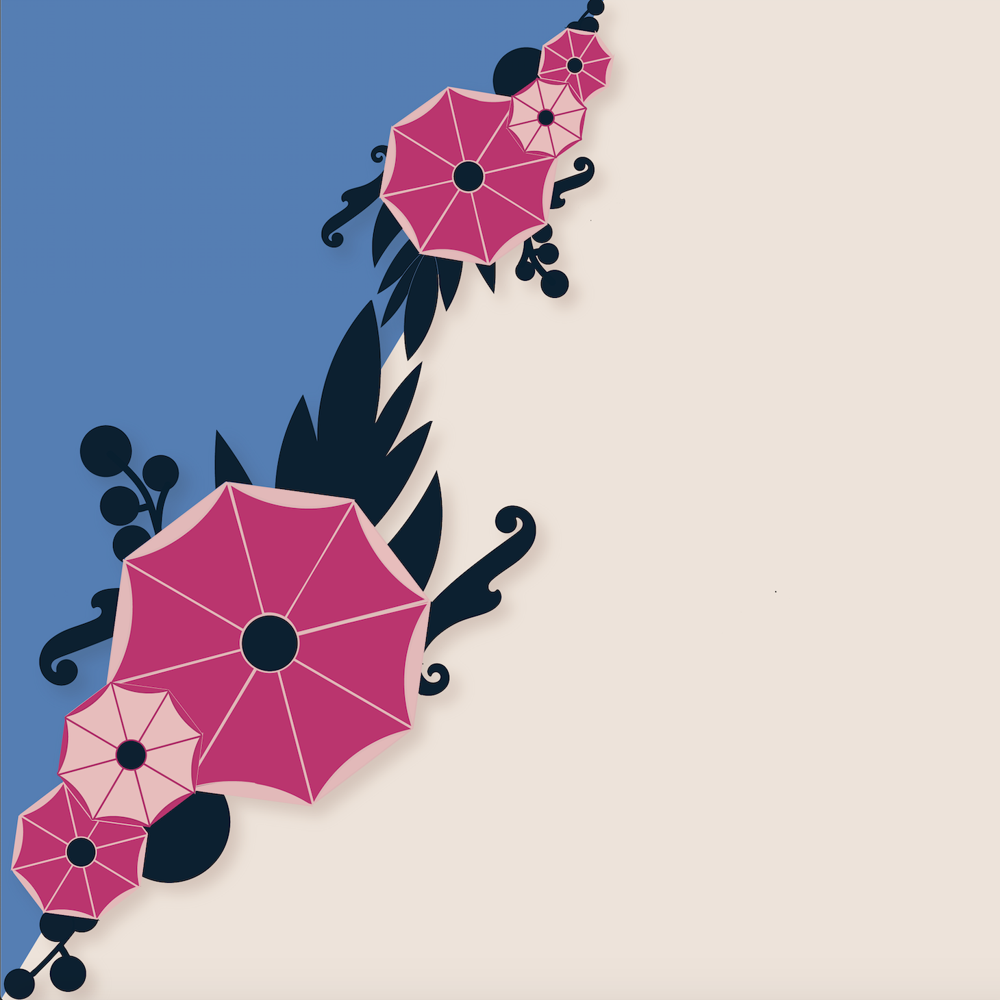

Form and Idea
Graphic Design | Visual Communication
Design is everywhere.
I took some photos of design I find in everyday life, and used my favorite one to generate a creative idea for a pattern. Then, distilled them into a new reduction.
During my creative process, I was deeply attracted by the sky blue and the vibrant magenta color in the original photo, and also drew the inspiration from the umbrellas in the sky. Incorporating various design elements pulled from the picture, I sketched several floral patterns and rearranged them into a repeating form, and then simplified it to a unique piece of design.

My initial patterns were inspired by the octagonal shape of the umbrella and its bright colors, which reminded me of the flower in full bloom. I did some research on floral patterns and decided to use some simple circles as the “greenery” to set off the main flower clusters at the center of each design. Both patterns share similar shapes and colors which were extracted from the original photo, and in the larger artboard, they were placed in certain order to make the whole repeating image more visually diverse and interesting. As the original patterns were relatively complicated, I reduced their size and utilized the negative space to make the overall drawing more organized and less overwhelming.
In order to emphasize the relationship and the cohesiveness of this progressive design, the reduction repeated the same color scheme and focused on the similar floral shapes and circular motifs. What’s unique is the integration of the design pattern into the background. The background referred to the layout of the photo, combining two contrast colors on the diagonal line, to make a connection with the original concept and also create a riveting visual effect. The placement of the flower clusters smartly covered the joint of the two colors and also serves as a great transition.
